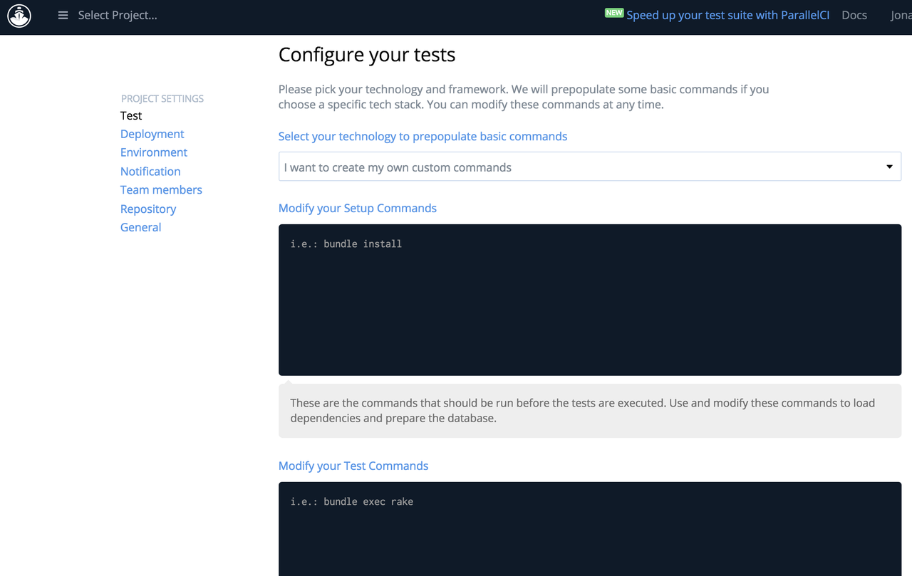

Automatically testing and validating the Ansible STIG Role for Red Hat 6
Introduction
One of my current projects at Ansible is to devise and maintain a collection of open source and free security-hardening-through-ansible repositories in collaboration with Daniel Shepherd from MindPoint Group (a badass IT security shop). Officially, it is an Ansible + MindPoint Group project with Dan and I at the helm.
Our initial effort has been to develop an Ansible role that applies the current STIG baselines to Red Hat Enterprise Linux 6 (RHEL 6) operating systems. Our end goal is to provide Ansible roles that apply security baselines for all of the major standards and for more than just the OS layer (i.e. application and database).
This effort is intended to build upon the official articles published Ansible and MindPoint Group, so I want to get into the technical deep dive right away.
I'll cover the two major components involved in this development effort: the development of the role itself, and the testing suite we currently use to validate the STIG can be properly applied.
RHEL6-STIG Role
For the sake of my sanity (and length) I won't go into all of the bits that constitute the role, nor will I talk about what is in the README, if you want to surf through the code, it is openly available on GitHub.
The role has the ability to detect and remediate:
- 100% of CAT 1
- 91% of CAT 2, and
- 82% of CAT 3 benchmarks
of the DISA STIG for Red Hat Enterprise Linux 6.
We intentionally left out remediations for things that would likely break your system if attempted automatically in a one-size-fits-all approach (such as placing /etc and /tmp into their own partitions).
We also decided to add in an additional layer of testing; even though we have full confidence in Ansible's ability to declare changes accurately and idempotently, we did not want people who are new to the Ansible world to have to make any leap of faith (especially in the realm of security).
Testing
For testing we used the following components:
- Amazon Web Services
- STIGMA (simple and highly effective, python program I wrote)
- CodeShip
- Ansible
When trying to figure out the best and quickest way to test this, I came across a couple of decent challenges.
First, I REALLY REALLY did not want to host/manage my own CI server (think Jenkins, Bamboo, GoCD, etc). That left me with various SaaS-y options, I experimented with Drone, Codeship, and TravisCI; Codeship won me over. I felt their interface was more intuitive and it felt like the right balance of everything I needed (a topic for a future blog post), though I definitely think all three are very solid CI tools.
Second, there is currently no SaaS CI tool I could find which would let you test a server to the extent we needed in order to validate the application of the STIG. The solution was to have CodeShip install Ansible (and boto for the AWS modules) and have it clone a repository containing an Ansible playbook which would, at a high level:
- Launch the standard AWS provided RHEL6 AMI on an EC2 instance
- Apply the STIG baselines (CAT 1, 2 and 3)
- Run an OpenSCAP report and check the results via STIGMA
- If the results are satisfactory to the standard, terminate the EC2 instance
Enter CodeShip

This is the main screen you see after you import a project into CodeShip. IMO, this is an extremely straight forward interface. You simply write out in bash what you want to do for the setup and test processes.
For testing the STIG I used the following setup command stack:
curl -O http://keystored.on/some/really/secure.location/superkey > /dev/null 2>&1 chmod 400 ./superkey git clone git@github.com:ansible/ansible-lockdown.git lockdown pip install -r ./lockdown/tests/requirements.txt (cd lockdown/tests; ansible-galaxy install -r requirements.yml) curl -o ./lockdown/tests/roles/post-test/files/stigma.py https://raw.githubusercontent.com/nousdefions/STIGMA/master/src/stigma.py chmod +x ./lockdown/tests/roles/post-test/files/stigma.py
Let's go over what happens here in detail:
- First an insecure SSH key is downloaded from a server (this is the only use for the key, not used anywhere else) to the current working directory.
- The permissions to the key are changed to 400 so that neither SSH nor Ansible error out due to permissive key issues.
- The ansible-lockdown repository (which contains the testing code) is cloned into a directory called lockdown
- Install the pip requirements.txt within the lockdown directory; boto and Ansible
- The RHEL6-STIG role is installed via ansible-galaxy through a requirements.yml file (this is to both avoid overloading the lockdown repo with all the STIGs and to replicate the end user experience when using Galaxy). This file can be seen here.
- STIGMA is downloaded into the role’s files directory (post-test) that calls it. The reason it is downloaded like this and not simply stored in the repo is to so that any updates made to STIGMA can happen seamlessly without having to manually update to the latest version.
- Finally, execute permissions are added to STIGMA
The testing portion is a simple one-liner:
(cd lockdown/tests; ansible-playbook test-stigs.yml)
This runs the playbook seen here.
Gotchas
There were a couple of things that tripped me up while setting up this process. Here are the big ones:
- Curl behaves weird within CodeShip. Trying to use the -o option to specify where the file was to be downloaded to would error out unless the file already existed locally. You'll notice that stigma.py already exists within the testing repository as a blank file, for that purpose.
- CodeShip has you work within a python virtualenv, which is fine, but creates issues with Ansible out of the box when trying to use modules that have pip dependencies since Ansible modules default to /usr/bin/python for the interpreter. In my case it was causing an ImportError for boto. The quick fix here is to add a line to the hosts file:
localhost ansible_python_interpreter='/usr/bin/env python'
Naturally, any CI tool will have you work in a restricted environment (ie no sudo and no access to root level dirs). So when Ansible connects and tries to establish it's control path, it will error out with the default settings. This is the ansible config used for the testing:
[defaults] hostfile = ./hosts private_key_file = ../../insecure-CI host_key_checking = False display_skipped_hosts = False [ssh_connection] control_path = ./ansible-ssh-%%h-%%p-%%r ssh_args =
Important: Notice that host key checking is turned off. Without that option, any CI tool will hang at the accept hostkey prompt.
And that is all there is to it. Comment below if you have any questions or there is something I missed which I should have included.
Cheers.